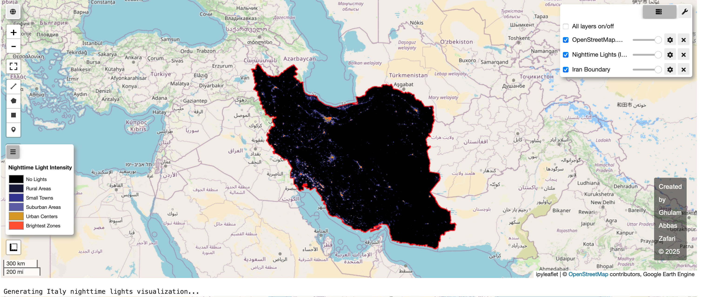
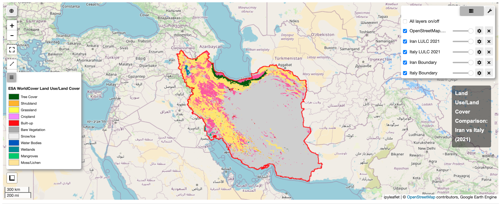

My Projects
Professional geospatial and data science implementations

_Italy.png)

_classification_(2021)_Italy.png)
Geospatial Comparative Analysis: Iran vs Italy
Comprehensive geospatial analysis comparing land use/land cover (LULC) and nighttime lights between Iran and Italy using Google Earth Engine and Python.
Key Features:
- VIIRS nighttime lights analysis (2015-2023)
- ESA WorldCover LULC classification (2021)
- Accuracy assessment with confusion matrices
- Statistical comparison of land cover distributions
Technical Implementation:
- Configured Google Earth Engine API in Jupyter Notebook
- Processed VIIRS monthly composite data for nighttime analysis
- Implemented ESA WorldCover data processing at 10m resolution
- Developed automated accuracy assessment with precision/recall metrics
- Created comparative visualizations with custom legends
Google Earth Engine
Python
Geemap
Matplotlib
Pandas
Seismic Globe: 3D Visualization of Global Earthquake Activity (2020–2024)
Interactive 3D visualization tool that maps global earthquake activity from 2020 to 2024, fetching near-real-time seismic data from USGS.
Key Features:
- Real-time data integration
- Interactive 3D globe
- Magnitude-scaled markers
Python
Three.js
USGS API

CityInsights: Urban Feature Visualization Using OpenStreetMap Data
Python-based geospatial visualization tool that analyzes and maps key urban features using OpenStreetMap data.
Key Features:
- Visualization of urban features
- Comparative city analysis
- OpenStreetMap integration
Python
OSMnx
GeoPandas

Forest
Urban
Water
Mediterranean Land Cover Dynamics (1985-2022)
Analysis of land cover transitions across 12 Mediterranean countries using Landsat and Sentinel-2 data.
Key Insights:
- 17.3% forest cover reduction
- 142% urban expansion
- 3 transition clusters
Google Earth
Random Forest
PostGIS